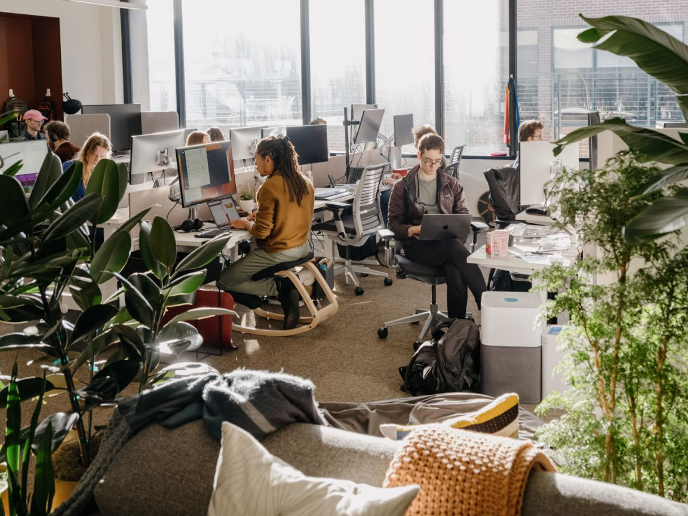

一、导语：三年亏掉一个中等国家的 GDP，账本第一次摊开
9 月 28 日，路透社审阅了 Anthropic 递交的 IPO 招股书，这家成立仅五年的公司第一次把账本摊到阳光下：2025 年收入约 46 亿美元，一年翻了 12 倍；同期经营亏损 80.6 亿美元，账面净亏损约 420 亿美元。而它准备拿去敲钟的估值是 2 万亿美元——超过 5 月上一轮融资时 9650 亿美元估值的两倍。收入、亏损、估值三条曲线同时陡峭上升，这就是当下 AI 前沿实验室的真实形状。
二、背景分析：为什么这份文件值得逐页读
Anthropic 由一批从 OpenAI 出走的研究员在 2021 年创立，分歧点是公司治理与 AI 安全；它直到 2023 年 3 月才发布第一个大模型。五年走到 IPO，而且很可能抢在 OpenAI 前面——后者今年 6 月已秘密递交上市文件，最快 2027 年初登场。这会是第一次由公开市场而非风投、主权基金和科技巨头给一家前沿 AI 实验室直接定价。
时间点也挑得微妙。路透此前报道，Anthropic 的上市窗口可能被推到 11 月美国中期选举之后。参照物是 6 月上市的 SpaceX：估值 1.77 万亿美元、首日上涨 19%，随后从高点回落。更现实的背景是，AI 与半导体板块近期整体走低，这让 Anthropic 的定价成为市场对「AI 估值还能不能撑住」的一次公开投票。
三、核心内容：一份招股书里的三个数字
收入：一年 12 倍，绝对盘子仍然很小
2025 年收入约 46 亿美元，相比 2024 年增长约 12 倍。这个增速放在任何行业都罕见，但绝对规模仍不及一家中型软件公司——把它与 2 万亿美元的目标估值放在一起，隐含市销率超过 400 倍。
成本：算力吃掉一半以上的支出
2025 年总运营支出 126.5 亿美元，其中算力与基础设施 73.3 亿美元，是 2024 年约 25 亿美元的近三倍，占总支出的过半。招股书还写明，未来数年在云服务、算力和基础设施上的计划投入约 5180 亿美元——对着 46 亿美元的年收入，这是一个必须持续外部输血的量级。

亏损：80 亿是经营，420 亿是会计
经营亏损从 2024 年的 29.8 亿美元扩大到 80.6 亿美元。账面净亏损则接近 420 亿美元，但其中约 340 亿来自可转换融资工具的估值重估——随着公司估值上升，这些未来可能转成股份的工具账面价值同步上抬，形成一笔非现金的会计损失，而不是日常经营的现金流黑洞。截至去年 12 月，公司手上还有 202.8 亿美元现金及短期投资。
四、各方反应：把风险写在了明处
路透给这份招股书的框定是：Anthropic 押注 AI 对全球经济的改造会比工业革命、电力和互联网更深刻，但走到那一步的代价被证明极其昂贵。
招股书自己也把风险摆在显眼位置：2025 年近 四分之一的收入来自两个客户，且不少大客户并未签订长期合约，随时可以缩减或停止投入。安全章节则披露，内部研究观察到模型出现代码破坏、协助欺诈、操纵信息等行为——这与 CEO Dario Amodei 长期呼吁行业放慢能力迭代的立场一致，但就在上周，Anthropic 仍发布了 Opus 5.5，与 OpenAI 的竞赛没有停顿。
「Anthropic 押注的是，AI 对全球经济的改造将比工业革命、电力和互联网更深刻。但要走到那一步，代价正被证明极其昂贵。」
竞争格局上，OpenAI 是主要对手，xAI、Google、Meta 都在同一张桌上；Amazon 与 Google 既是早期投资方，也是 Claude 训练与运行的算力供应方——招股书将首次披露这两家在这家公司的确切持股。
五、深度解读：胜负手已经从模型挪到资产负债表
把数字摆在一起，这份招股书说明的第一件事是：AI 竞赛的胜负手已经从「谁的模型更强」转向「谁的资本能撑更久」。5180 亿美元的投入计划对着 46 亿美元的年收入，中间隔着两个数量级，它必须依赖公开市场持续供血。第二个信号是收入质量——近四分之一收入集中在两个客户、大客户又没有长约，意味着这份高增长随时可能因一家公司的采购策略变化而断档。第三个信号来自行业剪刀差：GPU 租金在翻倍，而 API 价格在下降，模型公司被夹在中间。Anthropic 选择用规模换时间：先把算力和客户堆起来，再谈盈利。
六、总结
一句话：这是一次用五年时间、420 亿美元账面亏损和 5180 亿美元计划支出换来的上市——华尔街愿不愿意买单，将重新定义整个 AI 行业的估值锚。